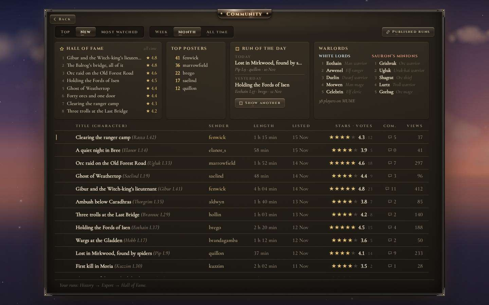

Throwaway mockups for the seven points of stage 65 (the community), in the real look: the start menu, History's big box, the export editor, the Account page and the watch page as captured from a dev server with the e2e fakes (flags accounts, sync, runs and share on), the HTML replay as built by the dev app; the new parts (the Community page, Random Runes, stars and comments, Hall of Fame in the export editor, the counters, Published runs as a view, the admin queue's comments and notes) drawn over and around them. Each picture opens that state in the one file; there the tabs switch point, variant and state, and Desktop / Phone the view. README.md beside this file has each variant, a recommendation per point and what did not fit.
A row of boxes over the list (Hall of Fame, Top posters, the run of the day, the warlords); the list; Random Runes at the foot (the page scrolls). Top (by stars, weighted) over the week is the default; New and Most watched beside it, the period beside that. Phone: the tabs Runs · Hall of Fame · Runes, Runs open.
New over the month: newest first, the same row. Page 1 of 8 in the foot; ‹ › or PgUp / PgDn turn.
Desktop: the page scrolled down past the list to the pager and Random Runes, the reference’s place. Phone: the tabs form, the Runes tab.
The phone’s tabs form, the second tab: the boxes stacked (the run of the day first, then Hall of Fame, Top posters, the warlords).
The third tab: the board, the field at its foot.

The other phone form: one long page in the reference’s order. The boxes come first (a sideways strip), then the list.
The sections form scrolled down.
A guest reads everything: no Published runs button; the board says “Log in to write”; the foot says how to take part.
Nothing listed yet (the first days): the list says how a run gets here; the boxes say little. The warlords come from MUME and are there anyway.
GET /api/gallery and /api/community on the way (cached 60 s, so short): stage 24’s bar in the list, the boxes faint.
No network: one line and Try again where the list was; the boxes and the board are left out.
The flag runes off: the board is gone from the foot; the rest stays.


The list on the left; a column on the right with the run of the day, Hall of Fame, Top posters, Random Runes and the warlords (the column scrolls by itself). Top (by stars, weighted) over the week is the default; New and Most watched beside it, the period beside that. Phone: the tabs Runs · Hall of Fame · Runes, Runs open.
New over the month: newest first, the same row. Page 1 of 8 in the foot; ‹ › or PgUp / PgDn turn.
Desktop: the right column scrolled down to Random Runes and the warlords. Phone: the tabs form, the Runes tab.
The phone’s tabs form, the second tab: the boxes stacked (the run of the day first, then Hall of Fame, Top posters, the warlords).

The third tab: the board, the field at its foot.

The other phone form: one long page; the list first (10 rows, More), then the boxes, then the board.
The sections form scrolled down.
A guest reads everything: no Published runs button; the board says “Log in to write”; the foot says how to take part.
Nothing listed yet (the first days): the list says how a run gets here; the boxes say little. The warlords come from MUME and are there anyway.
GET /api/gallery and /api/community on the way (cached 60 s, so short): stage 24’s bar in the list, the boxes faint.
No network: one line and Try again where the list was; the boxes and the board are left out.
The flag runes off: the column holds the boxes alone.
The latest notes, newest first: “name: text” on one line, cut with … when long; the age at the right. A pointer over a note shows the whole text and Report (desktop); a tap opens it (phone). The field at the foot.
A note being written: one line, ≤ 500 with a count; Enter or Post sends. Left today: 4 of 5.
A note cut with … opens in place to its whole text (a pointer over it or a tap); Report under it.
Five notes written today: the field is off and says when it opens again.
One’s own note is marked in gold and has Remove (no question: it is one line; a flash with Undo for a few seconds).
Report on another’s note: the run’s Report dialog with the note quoted. Five accounts hide it until the owner has looked.
A guest reads; in the field’s place “Log in to write”, which opens Log in.
The stars sit in the band beside the title and details: the client’s star control (History’s Rate), one’s own vote lit, the mean and the votes beside it; a click changes it.
Not rated yet: the stars hollow, “Rate this run”; a pointer peeks, a click sets.
The page scrolled under the frame: the comments, newest last; one’s own with Remove, the others with Report; the field ≤ 1 000 with a count and Post.
One’s own run (logged in as fenwick): no stars to give, “your run” beside the mean; Remove on every comment (the run’s sender), no Report on one’s own.
A guest: the mean, “Log in to rate” where the stars would be; the comments readable with Report off; “Log in to comment” where the field sits.
The guest’s view scrolled to the comments.
No comments yet: one line and the field.
The stars head the panel beside the frame (phone: under the frame, over the comments): the client’s star control (History’s Rate), one’s own vote lit, the mean and the votes beside it; a click changes it.
Not rated yet: the stars hollow, “Rate this run”; a pointer peeks, a click sets.
The panel: the comments scroll under the stars, newest last; the field stays at the panel’s foot.
One’s own run (logged in as fenwick): no stars to give, “your run” beside the mean; Remove on every comment (the run’s sender), no Report on one’s own.
A guest: the mean, “Log in to rate” where the stars would be; the comments readable with Report off; “Log in to comment” where the field sits.
The guest’s view scrolled to the comments.
No comments yet: one line and the field.
Hall of Fame is the fourth choice, after Link (letter F). The file row says Title, as for Link. Export opens the share dialog in its listed form.
A guest sees Link and Hall of Fame greyed (round 12’s pick 1a): “Log in to publish”.
The listed form, the first publication of the account: stage 64’s rules and tick (one tick covers links and listing).
Title “Publish to the Hall of Fame”; the line under the size says who sees it: “Everyone can find this in the Community.” Publish.
The result: the link with Copy; where it shows; Open Community or Done.
At most 10 listings a day (429 too_many): the error line offers a link now and listing later.
Community “3 new” (built, `?community=3`) and the owner row “fenwick · synced · 2 new”: two new stars or comments on one’s own runs. A press on the owner row opens the Account page’s Published runs view, which clears it.
Each count stops at 99; more says “99+ new”. The gold never gives way; the name does (with …).
A guest gets the counter too (from /api/stats/public, no extra request); no owner mark.
Nothing new: the rows say nothing, as today.
The Account page’s section shrinks to one row: the counts and the new reactions in gold, and Published runs (U) to open the view.
The view: per run the title, Listed / Link only, the stars and votes, comments, views, date and size; what is new since the last look in gold with a mark at the left (cleared when the view closes). The hidden run says so.
Edit: the title, the description and the switch “Listed in the Community”. Unlisting keeps the stars and comments; listing again does not put it back on top of New.
Nothing published: the row says how; the view is not opened.
The report queue lists three kinds: a run (stage 64’s card), a comment (its whole text, its writer, the run it is on) and a note (text and writer). Hide / Restore, Dismiss reports, Delete, Suspend the writer.
Delete on a comment asks first in the plain modal: the text, what happens to the count, the log.